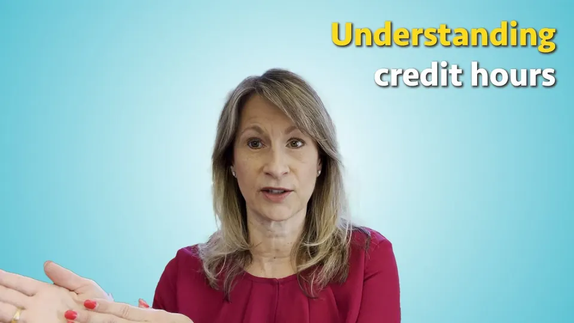
4:48 Dr. Janice FedorYour guide, 20 years in higher education
College doesn’t come with instructions. Here they are.
The forms, tools, deadlines and straight answers you need from senior year to your first job, gathered by a professor who has spent two decades inside higher education.
Every link opened and checked September 2026
The rulebook
Nobody hands you the rulebook. So here it is, in order.
Twelve words that run every college, and that nobody explains at orientation. Tap any one for the plain-English version.
Start here
Where are you right now? Start there.
Pick the stage you’re in. You’ll jump straight to the checklist for it, and the library will narrow to what matters for that stage.
01 I’m finishing high school Lists, essays, the FAFSA and what it really costs. Show me 02 I start college this fall Credit hours, orientation, your aid offer. Show me 03 I’m in my first year Syllabi, office hours, advisors, deadlines. Show me 04 I’m in college now Degree audits, prerequisites, staying on pace. Show me 05 I’m about to graduate Capstones, internships, loans, what’s next. Show me I’m helping a student Parents, counselors and mentors: start with the questions families ask most. Show me
The roadmap
Senior year to first job, in the order it happens.
Thirty-five things that decide how college goes, almost every one linked to the tool or explainer that gets it done. Tick them off as you go; your progress stays on this device.
0/35
done
-
August to May
Senior year of high school
0 of 6
-
May to August
The summer before college
0 of 6
-
Weeks 1 to 15, then finals
Your first semester
0 of 6
-
Each term
Every semester after
0 of 6
-
The last two terms
Your final year
0 of 6
The library
75 resources, almost all free. No ads. No sign-up.
Official government tools first, then the best free ones from nonprofits, universities and companies. Every link was opened and checked in September 2026.
Choosing and applying
Find schools that fit, apply once and compare what they really cost.
- Governmentcollegescorecard.ed.gov College Scorecard U.S. Department of Education Compare colleges on graduation rates, average cost after aid and what graduates go on to earn. (opens in a new tab)
- Governmentnces.ed.gov College Navigator National Center for Education Statistics Official federal data on thousands of colleges: tuition, enrollment, retention and graduation rates. (opens in a new tab)
- Governmentcollegecost.ed.gov Net Price Calculator Center U.S. Department of Education Find any college’s net price calculator and estimate what you would actually pay, not the sticker price. (opens in a new tab)
- Free to usecommonapp.org Common App One application you can send to more than 1,000 colleges. Free to use; some colleges charge an application fee, and fee waivers exist. (opens in a new tab)
- Freebigfuture.collegeboard.org BigFuture College Board Search colleges, explore majors and careers, and find scholarships in one place. (opens in a new tab)
- Freequestbridge.org QuestBridge Connects high-achieving students from low-income backgrounds with full four-year scholarships at partner colleges. (opens in a new tab)
Tests and college credit
The exams, and every way to walk in with credit already earned.
- Free practicebluebook.collegeboard.org Bluebook College Board The official testing app for the digital SAT and PSAT, with full-length practice tests you can take for free. (opens in a new tab)
- Exam feeact.org ACT Register for the ACT and find official prep materials, including a free practice test. (opens in a new tab)
- Freeapstudents.collegeboard.org AP Credit Policy Search College Board Look up how much credit a college gives for each AP exam and score before you choose where to send them. (opens in a new tab)
- Exam feeclep.collegeboard.org CLEP College Board Earn college credit for what you already know by passing one exam, at colleges that accept CLEP. (opens in a new tab)
- Freetransferology.com Transferology See how your courses and exam credit would transfer to another college before you move. (opens in a new tab)
Paying for college
Federal aid, scholarships and the forms that unlock them.
- Governmentstudentaid.gov FAFSA Federal Student Aid The form for federal grants, work-study and loans, and most states and colleges use it too. File it every year, and never pay anyone to file it. (opens in a new tab)
- Governmentstudentaid.gov Federal Student Aid Estimator Federal Student Aid Estimate your Student Aid Index and Pell Grant eligibility before you file. (opens in a new tab)
- Governmentstudentaid.gov Federal Pell Grant Federal Student Aid Federal grant money for undergraduates with financial need. It usually doesn’t have to be repaid. (opens in a new tab)
- Governmentstudentaid.gov Federal Work-Study Federal Student Aid Part-time jobs for students with financial need, often on campus and flexible around classes. (opens in a new tab)
- Governmentstudentaid.gov Subsidized and unsubsidized loans Federal Student Aid How federal Direct Loans work, and why the government pays the interest on subsidized loans while you’re enrolled at least half-time. (opens in a new tab)
- Governmentstudentaid.gov Understanding your aid offer Federal Student Aid How to read an aid offer line by line, compare offers and tell a grant from a loan. (opens in a new tab)
- Governmentcareeronestop.org Scholarship Finder CareerOneStop, U.S. Department of Labor A free scholarship search sponsored by the U.S. Department of Labor, filterable by level, state and field. (opens in a new tab)
- Governmentconsumerfinance.gov Paying for College Consumer Financial Protection Bureau Compare financial aid offers and plan how you’ll cover the rest, from the federal consumer watchdog. (opens in a new tab)
- Governmentirs.gov Education tax credits Internal Revenue Service The American Opportunity and Lifetime Learning credits can lower the tax your family owes for tuition paid. (opens in a new tab)
- Governmentva.gov GI Bill and VA education benefits U.S. Department of Veterans Affairs Education benefits for veterans, service members and eligible family members. (opens in a new tab)
- Fee, waivers availablecssprofile.collegeboard.org CSS Profile College Board A second aid application some private colleges require before they award their own grants. Check each school’s list. (opens in a new tab)
- Freefastweb.com Fastweb A long-running free scholarship search. A real scholarship never asks you to pay to apply. (opens in a new tab)
Studying and writing
Free tools for notes, research, citations and remembering what you study.
- Freeowl.purdue.edu Purdue OWL Purdue University Clear guides to writing, grammar and citation styles like APA, MLA and Chicago. (opens in a new tab)
- Freezotero.org Zotero Open-source tool that saves your sources as you research and formats citations and bibliographies for you. (opens in a new tab)
- Freescholar.google.com Google Scholar Google Search scholarly articles, theses and books, and see who has cited them since. (opens in a new tab)
- Freesearch.worldcat.org WorldCat OCLC Search library collections worldwide and find the nearest library that holds a book. (opens in a new tab)
- Freelearningscientists.org The Learning Scientists Study strategies backed by cognitive science, like retrieval practice and spacing, with free downloadable guides. (opens in a new tab)
- Free on desktopapps.ankiweb.net Anki Flashcards built on spaced repetition, so you review each card right before you’d forget it. (opens in a new tab)
- Freekhanacademy.org Khan Academy Free lessons and practice in math, science, economics and more. Good for filling gaps before a course starts. (opens in a new tab)
- Freeocw.mit.edu MIT OpenCourseWare Massachusetts Institute of Technology Lecture notes, problem sets, exams and videos from real MIT courses. (opens in a new tab)
- Freeyoutube.com Crash Course Crash Course on YouTube Fast, well-made video courses on history, science, economics, psychology and more. (opens in a new tab)
- Freeopenstax.org OpenStax Rice University Peer-reviewed textbooks for common intro courses, free online. Ask whether your professor accepts them. (opens in a new tab)
- Freelibretexts.org LibreTexts Open textbooks across nearly every subject, free to read online. (opens in a new tab)
- Freedesmos.com Desmos Graphing and scientific calculators that run in your browser. (opens in a new tab)
- Free tierwolframalpha.com Wolfram|Alpha Wolfram Research Computes answers to math, science and statistics questions. Step-by-step solutions need a paid plan. (opens in a new tab)
- Free on the webhemingwayapp.com Hemingway Editor Hemingway Highlights long, hard-to-read sentences so your writing gets clearer. (opens in a new tab)
- Free tierpomofocus.io Pomofocus A simple Pomodoro timer: focused work blocks with short breaks built in. (opens in a new tab)
Free software and courses
What your student email already gets you.
- Free for studentseducation.github.com GitHub Student Developer Pack GitHub Free developer tools and cloud credits for verified students. (opens in a new tab)
- Free for studentsmicrosoft.com Microsoft 365 Education Microsoft Word, Excel, PowerPoint and OneNote at no cost with a valid school email at eligible schools. (opens in a new tab)
- Free tiercoursera.org Coursera Online courses from universities and companies. Some content is free; certificates cost money. (opens in a new tab)
- Free tieredx.org edX Courses from universities including Harvard and MIT. Many can be audited for free; certificates cost money. (opens in a new tab)
Careers and internships
Figure out what jobs exist, what they pay and how to get in.
- Governmentbls.gov Occupational Outlook Handbook U.S. Bureau of Labor Statistics What hundreds of jobs pay, the training they need and how fast they’re growing. (opens in a new tab)
- Governmentonetonline.org O*NET OnLine U.S. Department of Labor Detailed profiles of occupations: daily tasks, skills, education and wages. (opens in a new tab)
- Governmentmynextmove.org My Next Move U.S. Department of Labor A short interest quiz that suggests careers to explore, with pay and outlook for each. (opens in a new tab)
- Governmentcareeronestop.org CareerOneStop U.S. Department of Labor The Department of Labor’s hub for career exploration, training programs and job search. (opens in a new tab)
- Governmentusajobs.gov Pathways for students and graduates USAJOBS Federal internships and jobs set aside for current students and recent graduates. (opens in a new tab)
- Free for studentsjoinhandshake.com Handshake The job and internship platform many colleges use. Sign in through your school to see who recruits there. (opens in a new tab)
- Free tierlinkedin.com LinkedIn Build a profile recruiters can find, and use it to reach alumni from your school. (opens in a new tab)
- Freeidealist.org Idealist Jobs, internships and volunteer roles at nonprofits. (opens in a new tab)
After graduation
Grad school tests, service years and paying back loans.
- Governmentstudentaid.gov Repaying federal loans Federal Student Aid When payments start, the repayment plans on offer and what to do if you can’t pay. (opens in a new tab)
- Governmentstudentaid.gov Public Service Loan Forgiveness Federal Student Aid Forgives the remaining balance on eligible federal loans after 120 qualifying payments while working full-time for government or a qualifying nonprofit. (opens in a new tab)
- Governmentus.fulbrightonline.org Fulbright U.S. Student Program U.S. Department of State Grants for graduating seniors and recent graduates to study, research or teach English abroad. (opens in a new tab)
- Governmentamericorps.gov AmeriCorps Paid national service. Finishing a term can earn a Segal Education Award for tuition or student loans. (opens in a new tab)
- Governmentpeacecorps.gov Peace Corps Serve abroad in education, health, agriculture and more, usually for 27 months including training. (opens in a new tab)
- Exam feeets.org GRE General Test ETS The admissions test many graduate and business programs accept. (opens in a new tab)
- Exam feelsac.org LSAC Law School Admission Council Register for the LSAT and apply to law schools. (opens in a new tab)
- Exam feemcat.org MCAT Association of American Medical Colleges Everything about the medical school admissions test, from registration to prep. (opens in a new tab)
Health and crisis support
Free, confidential and there at 3 a.m.
- Free, 24/7988lifeline.org 988 Suicide & Crisis Lifeline 988 Lifeline Call or text 988 any time for free, confidential support from a trained counselor. (opens in a new tab)
- Free, 24/7crisistextline.org Crisis Text Line Text HOME to 741741 to reach a trained volunteer crisis counselor. (opens in a new tab)
- Free, 24/7thetrevorproject.org The Trevor Project Crisis support for LGBTQ+ young people by phone, text and chat. (opens in a new tab)
- Free, 24/7samhsa.gov SAMHSA National Helpline Substance Abuse and Mental Health Services Administration 1-800-662-4357. Confidential treatment referral and information for mental health and substance use. (opens in a new tab)
- Free, 24/7rainn.org RAINN The National Sexual Assault Hotline, 1-800-656-4673, or chat online. (opens in a new tab)
- Freejedfoundation.org The Jed Foundation Mental health guides for students and families, including how to help a friend who’s struggling. (opens in a new tab)
- Freeactiveminds.org Active Minds Student-run mental health chapters on campuses across the country. (opens in a new tab)
Food, housing and basic needs
Help that many students qualify for and never ask about.
- Governmentfns.usda.gov SNAP for college students U.S. Department of Agriculture Some college students qualify for SNAP food benefits. See the student rules and the exemptions. (opens in a new tab)
- Free211.org 211 United Way Call 211 or search online to find local help with food, housing, utility bills and more. (opens in a new tab)
- Freeswipehunger.org Swipe Out Hunger The national nonprofit fighting student hunger. Many campuses run a pantry or meal-swipe sharing; ask your dean of students. (opens in a new tab)
First-gen, access and your rights
For first-generation students, students with disabilities and the people helping them.
- Governmentada.gov Disability rights under the ADA U.S. Department of Justice Your rights under the Americans with Disabilities Act. At college, accommodations start with the disability services office. (opens in a new tab)
- Governmentstudentprivacy.ed.gov FERPA: who sees your records U.S. Department of Education In college, the rights to your education records are yours. Parents generally need your consent to see grades. (opens in a new tab)
- Governmentope.ed.gov Check a school’s accreditation U.S. Department of Education Look up whether a school is accredited by a recognized agency before you enroll or transfer. (opens in a new tab)
- Freeimfirst.org I’m First! Strive for College Guidance and real stories from and for first-generation college students. (opens in a new tab)
- Freefirstgenforward.org FirstGen Forward The national center focused on first-generation college student success. (opens in a new tab)
- Freeunderstood.org Understood Help for people who learn and think differently, including ADHD and dyslexia, and how accommodations work. (opens in a new tab)
- Freencan.org NCAN National College Attainment Network Resources for counselors, mentors and programs helping students get to and through college. (opens in a new tab)
Nothing matches that yet.
Try a broader word, like , or . Or ask Dr. Fedor in the comments on YouTube.
Tools
Do the math before you register.
The two numbers that shape every semester: how much work your schedule really is, and what it does to your GPA.
Most classes are 3 credits, so 15 credits is usually five classes.
Full-timeabout 5 classes
In class 15 hrs
Outside class 30 hrs
Every week 45 hrs
The outlined block is a 40-hour work week. Each square is one hour.
At 15 credits a term, you finish in 8 semesters, about 4 years.
Based on the federal definition of a credit hour: an hour of class and at least two hours of work outside it each week, over about 15 weeks. Full-time is usually 12 credits or more, but your school sets the rules. Watch Dr. Fedor: Understanding Credit Hours 4:48
Add my GPA so far
Semester GPA
0.00
Uses the common 4.0 scale (A = 4.0, B = 3.0, with plus and minus steps). Some schools use A+ or different values; check your catalog.
The decoder
The words nobody explains at orientation.
32 flashcards, in plain English. Flip one to read it, or quiz yourself first.
-
Academic probation
A warning status when your GPA falls below your school’s minimum. It comes with a plan and a deadline to recover.
-
Accreditation
Outside review that confirms a school meets quality standards. It affects federal aid and whether your credits transfer.
-
Add/drop period
The first days of a term when you can change your schedule without a mark on your transcript. Check your school’s refund schedule too.
Watch Dr. Fedor: How To Survive Your First Semester Of College: A Roadmap 6:40
-
Bursar
The office that bills you and takes payments. Some schools call it Student Accounts.
-
Capstone
A final course, usually in your last year, where you pull your major together in one big project.
-
Corequisite
A course you take at the same time as another, like a lab alongside its lecture.
-
Cost of attendance
A college’s estimate of a full year: tuition, fees, housing, food, books, transportation and personal costs.
-
Credit hour
The unit colleges use to measure a course. One credit usually means about one hour in class plus about two hours of work outside it, every week of a roughly 15-week semester. Most bachelor’s degrees take about 120.
-
Degree audit
A report from your school that checks the courses you’ve finished against your degree plan and shows exactly what’s left.
-
Degree plan
The full list of courses your degree requires, usually split into general education, major requirements and electives.
Watch Dr. Fedor: The 3 Components Every Student Needs to Know About Degree Plans 3:57
-
Elective
A course you choose freely to reach your total credits. The best ones build a skill you’ll use anywhere.
Watch Dr. Fedor: These Elective Courses Work for Any Major 4:59
-
FAFSA
The Free Application for Federal Student Aid. It’s the form for federal grants, loans and work-study, and most states and colleges use it too.
Watch Dr. Fedor: College Paid For These: Why Aren’t You Using Them? 4:56
-
FERPA
The federal law that gives college students control over their education records, including who can see their grades.
-
First-year seminar
A small course for new students that teaches how college works and connects you with a professor early.
-
Full-time status
For undergraduates, usually 12 or more credits a semester. It can affect financial aid, health insurance and housing, so check before you drop a class.
Watch Dr. Fedor: How Many Classes Should You Take In College? 2:50
-
General education
The core courses every student takes, like writing, math and science, whatever the major. Often called gen eds or the core.
-
GPA
Grade point average. Each grade converts to points (an A is 4.0 on most scales), weighted by the course’s credits.
Watch Dr. Fedor: What Ungrading Means for Your College GPA 4:21
-
Grace period
The months after you leave school before federal loan payments start. For Direct Subsidized and Unsubsidized Loans it’s six months.
-
Grant vs. loan
Grants and scholarships are gifts you usually don’t repay. Loans are borrowed money you repay with interest.
Watch Dr. Fedor: The Money Mistake Every College Student Makes 8:00
-
Incomplete (I)
A temporary grade some professors allow when an emergency stops you from finishing. You complete the work by a set deadline.
-
Major and minor
Your major is your main field of study. A minor is a smaller set of courses in a second field.
-
Net price
What you’d actually pay: cost of attendance minus grants and scholarships. Loans don’t lower it; you still owe them.
-
Office hours
Time your professor sets aside to meet students. You don’t need a problem to go.
Watch Dr. Fedor: 5 Things Professors Wish Every Student Knew 7:56
-
Prerequisite
A course you have to pass before you can take another. Miss one and a whole sequence can slip a semester.
-
Registrar
The office that keeps your academic record: registration, transcripts, grades and graduation.
-
Satisfactory Academic Progress
The grades and completion pace you must keep to stay eligible for federal financial aid. Usually shortened to SAP.
-
Student Aid Index
The number the FAFSA calculates from your family’s finances to decide what aid you can get. It replaced the EFC starting with the 2024 to 2025 school year.
-
Subsidized loan
A federal loan for undergraduates with financial need. The government pays the interest while you’re enrolled at least half-time.
-
Syllabus
The rulebook for a course: grading, deadlines, attendance and policies, including on AI. Read it in week one.
-
Transfer credit
Credit one school accepts for courses you took at another. Check before you enroll, not after.
Watch Dr. Fedor: 3 Reasons Your Credits Didn’t Transfer 4:31
-
Withdrawal (W)
Leaving a course after add/drop. It usually shows as a W and doesn’t count in your GPA, but it can affect aid and your pace to graduate.
-
Work-study
A federal program that funds part-time jobs for students with financial need.
No term matches that. Ask it on YouTube and it may become the next video.
Watch
The four-minute video with more than 51,000 views.
Understanding Credit Hours is the most-watched video on the channel, and the fastest way to understand your whole schedule. Start there, then pick a topic.
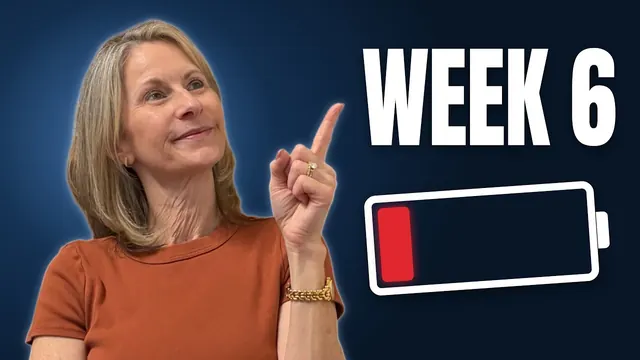
6:40How To Survive Your First Semester Of College: A Roadmap
The 3 Components Every Student Needs to Know About Degree Plans
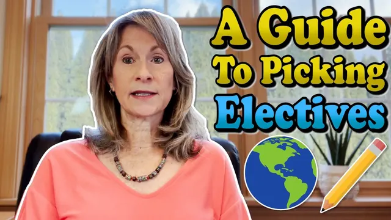
4:59These Elective Courses Work for Any Major
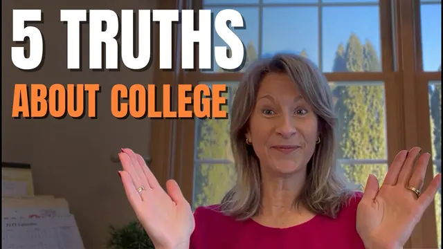
7:565 Things Professors Wish Every Student Knew
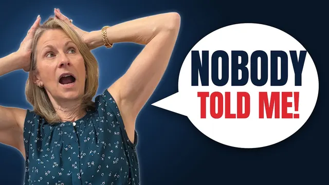
10:40What I Wish You Knew Before Freshman Year
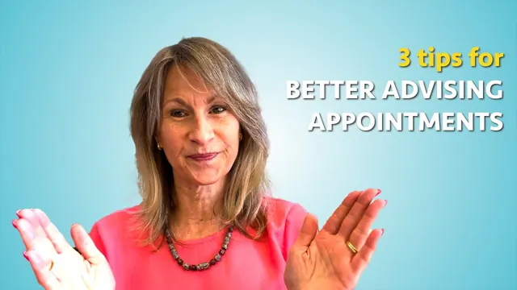
5:28How to Meet with an Academic Advisor
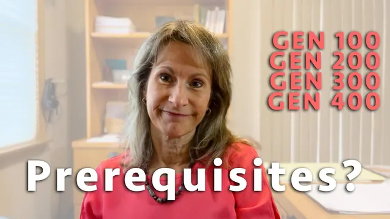
2:56What are Prerequisites?
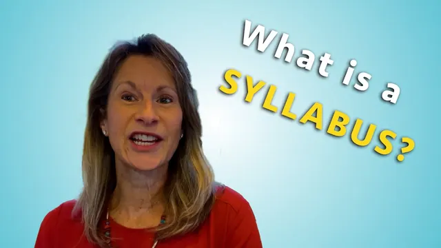
5:16What is a College Syllabus?
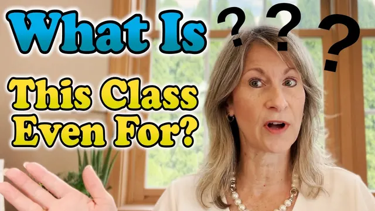
5:59What is A First Year Seminar?
How to Pass Your Capstone Course
Why School Accreditation is Important
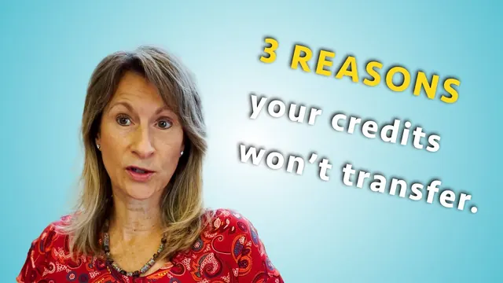
4:313 Reasons Your Credits Didn’t Transfer
How to Build a College List (That Gets You Choices)
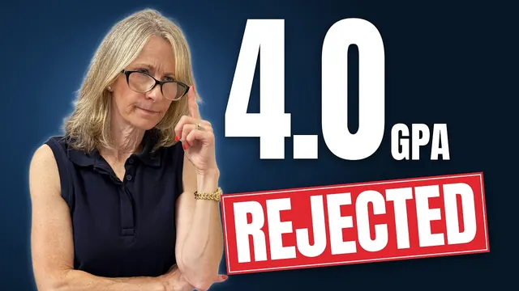
8:24What Admissions Officers Actually Look For (5 Factors)
The #1 College Essay Mistake (And the 3-Step Fix)
The Gap Year Question Every Student Asks
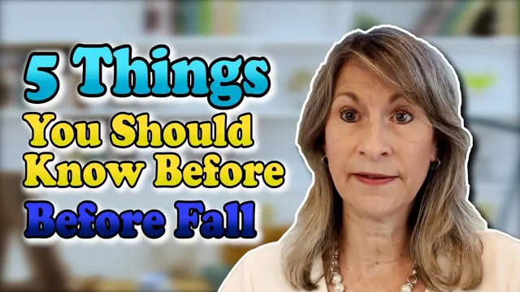
7:305 Things You Must Know Before Starting College
Planning Doesn’t Have to Be Stressful
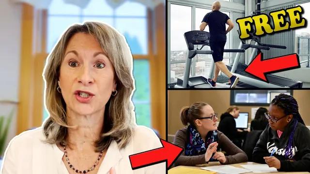
4:56College Paid For These: Why Aren’t You Using Them?
5 Free Resources That Make College More Affordable
The Money Mistake Every College Student Makes
Is 15 Credits Too Much? What College Students Should Know
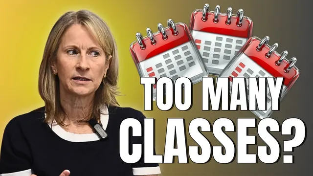
2:50How Many Classes Should You Take In College?
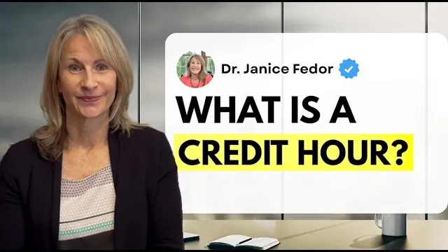
9:57Your Credit Hour Question Finally Answered
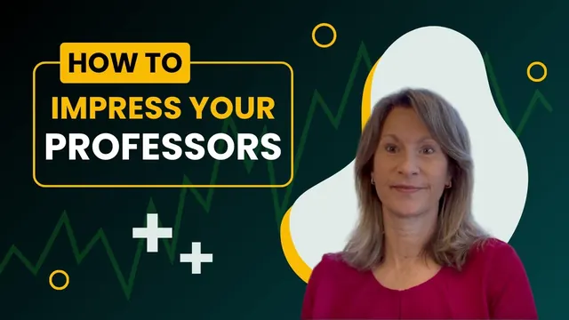
4:43What Professors Notice About Students
How to Get an A on Group Projects in College
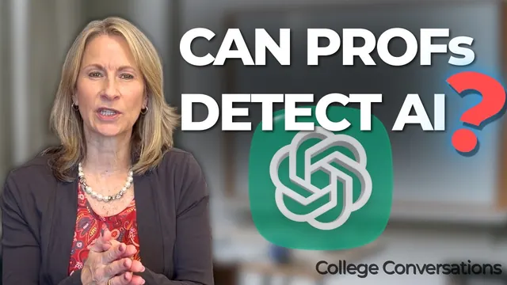
7:16College + AI: What Your Syllabus Actually Says
You May Not Know You’re Cheating
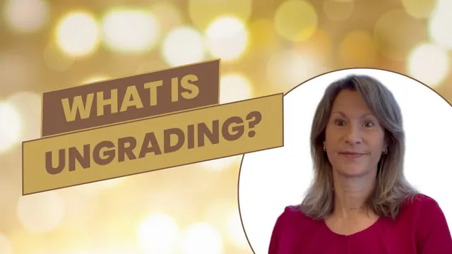
4:21What Ungrading Means for Your College GPA
Course Evaluations, Don’t Get This Wrong
Who made this
Real college advice from a real college professor.
Twenty years on every side of the desk: the classroom, the advising office and the meetings where the rules get made.
Most students don’t struggle because they aren’t smart enough. They struggle because nobody told them how the system works.
Dr. Janice Fedor has spent two decades in higher education as a professor, an advisor and an administrator. In 2021 she started College Conversations to explain the parts of college nobody explains: credit hours, degree plans, financial aid and the unwritten rules. This library is the same idea, in one place.
Visit the channelProfessor, advisor, administrator
350K+
views across the channel
- Years in higher education
- 20
- Subscribers
- 5,400+
- Views on one credit hour video
- 51K+
- Explaining college since
- 2021
From YouTube Studio, September 2026.
Questions
What students and families ask most.
Is everything here free?
Almost everything is free, and each card says what it costs. A few, like the ACT, GRE and CSS Profile, charge a fee, and most offer waivers if cost is a barrier. A real scholarship never charges you to apply.
How many credits should I take each semester?
Most bachelor’s degrees take about 120 credits. At 15 a semester that’s 8 semesters, or 4 years. Usually 12 credits is the minimum to count as full-time. Use the credit hour calculator above, then confirm with your advisor, because your degree plan has the final word.
Do I have to fill out the FAFSA every year?
Yes. Federal aid is awarded one school year at a time, so you file a new FAFSA for each year you want aid. Many states and colleges set their own deadlines, so earlier is better.
Will my credits transfer if I change schools?
It depends on both schools, the course and your grade. Check with the new school’s registrar before you enroll, and use Transferology to see how courses usually map. Dr. Fedor covers three common reasons in her video, 3 Reasons Your Credits Didn’t Transfer.
Can I change my major and still graduate on time?
Often, yes, especially if you switch early and your general education courses count toward both. Run a what-if degree audit and meet your advisor before you decide.
I’m a parent. Why can’t I see my student’s grades?
Under FERPA, once a student is in college the rights to their education records belong to them. Your student can sign a FERPA release with the registrar, or give you proxy access if the school offers it.
I’m struggling and it’s more than school. Where do I go?
If you’re in crisis, call or text 988 any time, or text HOME to 741741. On campus, your counseling center is usually free for enrolled students, and your dean of students office can help with emergencies, including food and housing.
How can I ask Dr. Fedor a question?
Leave it in the comments of any video on the College Conversations channel. The questions students ask are what the channel exists to answer.
Get the next explainer first.
Straight answers about how college actually works, from someone who has worked inside it for twenty years. Free, on YouTube.